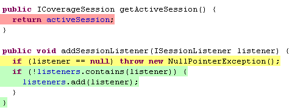

Line coverage and branch coverage of the active coverage session is also directly displayed in the Java source editors. This works for Java source files contained in the project as well as source code attached to binary libraries.

Source lines containing executable code get the following color code:
In addition colored diamonds are shown at the left for lines containing decission branches. The colors for the diamonds have a similar semantic than the line highlighting colors:
These default colors can be modified in the Preferences dialog (see next section). The source annotations automatically disappear when you start editing a source file or delete the coverage session.
The Eclipse preferences section General → Appearance → Editors → Text Editors → Annotations allows to modify the visual representation of coverage highlighting. The corresponding entries are:
In some situations it is not obvious, why particular lines do have highlighting or have a particular color. The reason is that the underlying code coverage library JaCoCo works on Java class files only. In some cases the Java compiler creates extra byte code for a particular line of source code. Such situations might be filtered by future versions of JaCoCo/EclEmma.